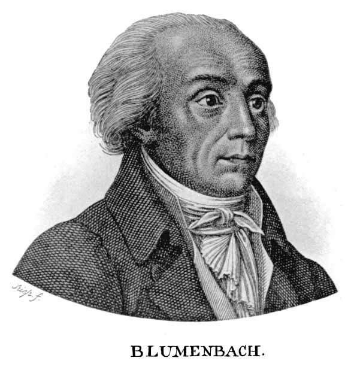

Pseudoscienze
Il razzismo scientifico (razzismo pseudoscientifico) è lo studio delle tecniche e delle ipotesi a
sostegno dell'inferiorità o superiorità razziale di alcuni gruppi umani rispetto ad altri; cercando di
dare fondamento scientifico ad una cosiddetta "scienza delle razze umane".
Il razzismo scientifico impiega l'antropologia (in particolare l'antropologia fisica), l'antropometria,
la craniometria e altre pseudo-discipline, proponendo tipologie antropologiche a sostegno della
classificazione delle popolazioni umane in "razze umane" fisicamente distinte e separate, nei confronti
delle quali si possa affermare che siano "superiori" o "inferiori".
Carl Linneo
Il medico ed esperto di botanica e zoologia svedese Linneo (1707-1778) modificò le basi della tassonomia
fondate sulla nomenclatura binomiale per la fauna e la flora ed è a tutt'oggi considerato un ricercatore
pionieristico nella definizione biologica della razza umana.

Classificazione
Nel suo Systema Naturae nell'edizione del 1767 etichettò quattro "varietà" di specie
umane:
-
l'amerindo
di pelle rossa, collerico ma retto, con i capelli neri diritti e spessi, testardo, zelante e
spirito libero, si dipinge con linee rosse su tutto il corpo e viene governato dai costumi.
-
l'europeo
di pelle chiara, sanguigno e bruno, con abbondanti capelli lunghi, occhi blu, gentile, acuto ed
inventivo, ricoperto interamente da abiti e governato dalle leggi.
-
l'asiatico
di pelle color giallognola, melanconico e rigido, con i capelli neri e gli occhi scuri, severo,
arrogante ed avido, ricoperto da lunghe vesti, governato dalle opinioni.
-
l'africano
di pelle nera, rilassato, capelli neri arricciati, naso piatto e labbra tumide, astuto,
sdolcinato e sconsiderato, si unge la pelle di grasso, governato dalla volontà arbitraria.
Cesare Lombroso
antropologo e sociologo italiano, nonché fondatore della psicologia criminale.
Il nucleo centrale della teoria di Lombroso, che si ispirava alla frenologia di Gall, è che i criminali
sono tali per nascita. Ciò sarebbe dovuto a delle particolari caratteristiche fisiche, che Lombroso
chiama atavismi , che condizionerebbero il comportamento dell individuo.

Johann Friedrich Blumenbach
Johann Friedrich Blumenbach è stato un antropologo, fisiologo e naturalista tedesco, autore di una
classificazione craniometrica delle razze umane che è stata accettata dai moderni fautori del cosiddetto
"razzismo scientifico".
Si laurea nel 1775 in Medicina presso l'Università di Gottinga con una tesi dal titolo De generis humani
varietate nativa liber ("Della naturale varietà dell'Umanità"), considerata uno dei lavori che ha
gettato le basi per lo sviluppo del razzismo scientifico.

Sulla base dei suoi studi "craniometrici" (ovvero basati sul cranio umano), divise l'umanità in cinque
"razze":
-
Caucasica o "razza bianca"
-
Americana o "razza rossa";
-
Malese o "razza olivastra";
-
Mongola o "razza gialla";
-
Africana o "razza nera".
Frenologia
La frenologia è una pseudoscienza dell'Ottocento, che cerca di individuare il carattere e la personalità
di una persona attraverso l'osservazione dell'aspetto fisico, in particolare del cranio. Fu ideata dal
medico tedesco Franz Joseph Gall, che affermava che le funzioni psichiche dipendevano da determinate
zone del cervello. La frenologia divenne popolare in Europa e in America, dando vita alla prima società
frenologica a Edimburgo, seguita da molte altre in Inghilterra e in America.
La frenologia sosteneva che la conformazione del cranio di una persona potesse definire le sue qualità
psicologiche. Secondo Gall, il cervello umano è composto da 27 organi, o aree, che corrispondono a
diverse caratteristiche della personalità. La lettura del cranio veniva effettuata attraverso l'analisi
delle protuberanze e delle rientranze del cranio, che rappresentavano le diverse aree cerebrali. Gall
effettuò studi anche sul sistema nervoso, ma l'errore della frenologia fu quello di ritenere che anche
qualità astratte come il coraggio o la fermezza avessero una loro specifica localizzazione nel cervello.
Aree del cervello o “Organi” di Gall:
i primi dieci sono comuni all’uomo e a tutti i vertebrati:
l’istinto sessuale e aggressivo
il senso della proprietà
la previsione dei pericoli
altri nove sono comuni all’uomo e ai soli vertebrati superiori:
il senso dello spazio e del tempo
la memoria
il linguaggio
la capacità di costruire
mentre solo gli ultimi otto sono propri dell’essere umano in quanto tale
l’abilità comparativa
il talento poetico
il senso del comico
il senso morale e religioso-metafisico
Lo Psicografo
Negli USA nel 1931, Lavery e White crearono lo "psicografo", una macchina costituita da un casco
metallico collegato ad un contenitore che stampava giudizi su 32 facoltà mentali, classificate con un
punteggio da 1 a 5. Il punteggio veniva ottenuto dal contatto delle sonde del casco con le varie
superfici del cranio, e alla fine si otteneva una valutazione personalizzata grazie alla grande varietà
di combinazioni di giudizi. Nonostante il grande successo iniziale e la ricchezza ottenuta dai
produttori, lo scetticismo intorno allo strumento crebbe nei successivi dieci anni, finché divenne utile
solo come pezzo da museo.
Uso ritenuto giusto, ma sbagliato della dottrina
La frenologia, la teoria che sosteneva che i tratti caratteriali potessero essere rilevati tramite la
forma del cranio, fu utilizzata per vari scopi, come la scelta della carriera o del partner, e i
frenologi erano considerati in grado di prevedere il comportamento delle persone. Anche molte aziende
utilizzavano la frenologia per giudicare la moralità dei dipendenti sulla base della loro morfologia.
Le Prigioni Americane
L'isolamento
Storicamente, le prigioni ne hanno fatto uso selettivamente per punire le persone che ritenevano
problematiche. Tuttavia, negli anni Ottanta, gli Stati Uniti hanno iniziato a usare l’isolamento in modo
nuovo e diffuso. In questi ambienti, le persone sono isolate in condizioni brutali e incredibilmente
rigide per 22-24 ore al giorno. Gli studiosi stimano che a un certo punto gli Stati Uniti tenevano
all’incirca 80 mila persone in isolamento.
Una forma di tortura
Le Nazioni Unite e altre autorità internazionali sostengono che l’isolamento prolungato può costituire
una tortura. Hanno spesso considerato come una forma di tortura qualsiasi misura che superi i trenta
giorni di isolamento. L'emendamento pene crudeli e inusitate tenta di ridurre la brutalità delle pene e
di limitare ciò che lo Stato può fare alle persone che infrangono le leggi.
Un baco nell’eccezionalità Usa
Una ragione per cui gli americani ignorano gli orrori dell’isolamento risiede in questioni di identità
nazionale. Anche per i più ferrei critici della politica estera degli Stati Uniti, sembrava
inaccettabile pensare che avvenissero torture nelle prigioni. Nel XIX secolo alle prigioni del Sud in
tutti gli Stati Uniti, fino alla prigione di Attica nel 1971, i detenuti sono sempre stati soggetti ad
abusi e torture.
Una svolta attesa invano
Molti speravano che la piaga del coronavirus potesse portare le persone a ripensare le nostre politiche
penali punitive. Molti americani hanno la percezione che il crimine violento stia aumentando. Questa
percezione è di cattivo auspicio per i tentativi di ridurre la popolazione carceraria e porre fine
all’isolamento.
Storia
I detenuti per reati connessi al traffico di stupefacenti erano circa il 21% nel 2004 nelle prigioni
statali e circa il 55% nelle prigioni federali. Secondo un rapporto del Dipartimento di Giustizia USA
del 2006, oltre 7,2 milioni di persone erano in quel momento in prigione o sotto varie forme di
custodia, ossia circa 1 americano su 32. Nel 2009 il tasso di incremento annuo della popolazione
carceraria è stato dello 0,2%.
Statistiche
Con meno del 5% della popolazione mondiale, gli USA hanno circa il 25% della popolazione carceraria
mondiale. Secondo l'ICPR, di questi 7,2 milioni, 2,3 sono effettivamente in prigione. Al secondo posto
nella classifica mondiale viene la Repubblica Popolare Cinese con 1,6 milioni, ma con una popolazione
complessiva oltre quattro volte maggiore di quella degli USA. Gli USA detengono il primato anche per il
più alto tasso di incarcerazione: circa 751 persone in prigione per ogni centomila abitanti.
Effetti sociali
Nel 1995 il governo aveva stanziato oltre 5 miliardi di dollari per la costruzione di nuove prigioni. Da
notare che ad ogni cento milioni di dollari spesi in costruzione, corrispondono 1,6 miliardi per costi
operativi nei successivi trenta anni. Il costo annuo per l'erario è stimato sui 60 miliardi di dollari,
mentre ogni prigioniero costa circa trentamila dollari per anno.
Affaire Dreyfus
Chi era Dreyfus?
Alfred Dreyfus era un ufficiale nato nel 1859 in Alsazia, regione della Francia orientale al confine con
la Germania.Era di religione ebraica e proveniva da una famiglia borghese.
La vita militare di Dreyfus
La sua biografia è contrassegnata dalla scelta di dedicarsi professionalmente alla vita militare: dopo
la laurea conseguita al Politecnico, entrò nell’esercito nel 1880. Due anni dopo ottenne il brevetto di
ufficiale di Stato Maggiore e nel 1893, l’anno prima dell’inizio della vicenda giudiziaria della quale
fu vittima, ricoprì l’incarico di addetto al Corpo di Stato Maggiore.
L’origine dell’Affaire
1894 un ufficiale francese anonimo dichiarava di inviare dei documenti militari inerenti la sicurezza
nazionale; questi frammenti di carta rivelavano dunque la presenza di una spia francese che,
dall’interno dell’esercito stesso, tramava contro il proprio Paese a favore invece della Germania.
L’accusa a Dreyfus
un ufficiale francese anonimo dichiarava di inviare dei documenti militari inerenti la sicurezza
nazionale; questi frammenti di carta rivelavano dunque la presenza di una spia francese che,
dall’interno dell’esercito stesso, tramava contro il proprio Paese a favore invece della Germania.
Sentenza
22 dicembre 1894 venne pronunciata la sentenza: il consiglio di guerra dichiarò Dreyfus colpevole di aver
consegnato documenti relativi alla sicurezza nazionale a uno Stato straniero e dunque reo di alto
tradimento. L’ufficiale subì quindi l’umiliazione della degradazione e fu condannato alla deportazione
perpetua presso l’Isola del Diavolo.
Proseguimento della vicenda
Si formarono due fazioni contrapposte: i dreyfusardi e gli antidreyfusardi. da un lato i sostenitori
della colpevolezza di Dreyfus, principalmente antisemiti, clericali, reazionari e nazionalisti
antisemiti, e dall’altro, repubblicani, socialisti – tra i quali in particolare Jean Jaurés – e
radicali, convinti invece dell’innocenza dell’ufficiale di origine alsaziana e della messa in atto di un
uso politico della giustizia, basato sul pregiudizio antisemita e volto alla reazione e alla
conservazione del potere.
Zola, in difesa di Dreyfus
Il 13 gennaio 1898 Émile Zola, intellettuale democratico, letterato e autore di celebri
opere, pubblicò sul giornale Aurore un testo in difesa di Dreyfus (il noto J’accuse, traducibile in
italiano con Io accuso) nel quale accusava l’ambiente militare e reazionario di aver ordito un complotto
a danno di un ufficiale innocente.
Il suicidio di Henry
Nell’agosto del 1898 un gesto estremo portò a un parziale ripensamento del caso: il tenente colonnello
Henry, che aveva confessato di aver falsificato alcuni documenti così da poter danneggiare Dreyfus, si
suicidò. Nel medesimo periodo, alcuni vertici militari si dimisero.
Il processo di Rennes e la grazia
Del 1899 è l’esito di una nuova inchiesta: il consiglio di guerra, riunitosi nella città di Rennes,
condannò Dreyfus a dieci anni di prigione. In seguito a tale sentenza, l’accusato ottenne la grazia da
parte del Presidente della Repubblica Émile Loubet, figura che aveva voluto una revisione del processo.
Reintegrazione nell’esercito
Del 1902 è l’avvio di un’altra inchiesta. L’esito, a cui si giunse nel 1906, comportò l’annullamento
della prima sentenza. Dreyfus venne allora reintegrato nell’esercito. In seguito fu poi promosso al
grado di tenente colonnello Dreyfus nel 1901 aveva anche pubblicato un testo di memoria autobiografica,
intitolato Cinq années de ma vie.
La morte
Dreyfus morì nella capitale francese nel 1935.
Confutazione
1945 Post-WWII, Inizio del rifiuto del razzismo scientifico
Solo dopo la Seconda guerra mondiale incominciarono i primi processi e i prime opposizioni politiche alle
teorie del razzismo scientifico
1954 Processo famiglia Brown contro scuola Board Education
Linda Brown doveva percorrere un miglio ogni giorno per raggiungere la sua scuola per non bianchi, anche
se viveva vicino a una scuola per bianchi. I Brown tentarono di iscrivere Linda alla scuola dei bianchi
ma furono respinti, così come molte altre famiglie afroamericane. In Brown v. Board of Education, un
gruppo di 13 genitori, tra cui il padre di Linda, Oliver Brown, ha citato in giudizio il consiglio
scolastico di Topeka a nome dei loro 20 figli presso il tribunale distrettuale federale, sostenendo che
la segregazione li privava della pari protezione delle leggi ai sensi del Quattordicesimo emendamento
Dichiarazioni dell’UNESCO
L’UNESCO nel 1950 rilascia il primo documento che nega ufficialmente la correlazione tra razza e
caratteristiche psicologiche, intellettive e comportamentali:
«Una razza, dal punto di vista biologico, può essere definita come uno dei gruppi di popolazioni che
costituiscono la specie Homo sapiens. Questi gruppi sono in grado di ibridarsi l'uno con l'altro,
ma, in
virtù delle barriere isolanti che in passato li tenevano più o meno separati, manifestano alcune
differenze fisiche a causa delle loro diverse storie biologiche. In breve, il termine "razza" indica
un
gruppo umano caratterizzato da alcune concentrazioni, relative a frequenza e distribuzione, di
particelle ereditarie (geni) o caratteri fisici, che appaiono, oscillano, e spesso scompaiono nel
corso
del tempo a causa dell'isolamento geografico.
In materia di razze, le uniche caratteristiche che gli antropologi possono efficacemente utilizzare
come
base per le classificazioni sono quelle fisiche e fisiologiche.
In base alle conoscenze attuali non vi è alcuna prova che i gruppi dell'umanità differiscano nelle
loro
caratteristiche mentali innate, riguardo all'intelligenza o al comportamento.
Dichiarazione sulla razza, Parigi, UNESCO, 1950»
Questo documento sarà poi seguito dalla “Declaration on Race and Racial Prejudice”
Nelson Mandela e la fine dell’Apartheid
L'apartheid era un sistema di segregazione razziale legalizzato in Sudafrica che ha causato gravi
ingiustizie e discriminazioni contro la popolazione nera del paese.
Nel 1990, dopo decenni di pressioni internazionali e lotte interne, il presidente sudafricano Frederik
de Klerk ha annunciato la fine dell'apartheid e il rilascio di Nelson Mandela, leader dell'African
National Congress (ANC), che era stato incarcerato per 27 anni per il suo attivismo contro il regime
razzista.
Mandela ha lavorato per promuovere la riconciliazione e la pace tra i sudafricani di tutte le razze, e
ha svolto un ruolo importante nella transizione del paese verso la democrazia. Nel 1994, Sudafrica ha
tenuto le sue prime elezioni democratiche multirazziali, in cui Mandela è stato eletto presidente.
Il suo mandato è stato caratterizzato da un forte impegno per la giustizia sociale, la riconciliazione e
la costruzione di un'identità nazionale sudafricana inclusiva. Mandela ha anche lavorato per promuovere
i diritti delle donne e delle minoranze sessuali.
La fine dell'apartheid e l'ascesa di Mandela al potere sono stati un momento storico per il Sudafrica e
per il mondo intero. Sono stati fatti enormi progressi, ma ci sono ancora sfide importanti da
affrontare, tra cui l'ineguaglianza economica e la lotta contro la discriminazione.